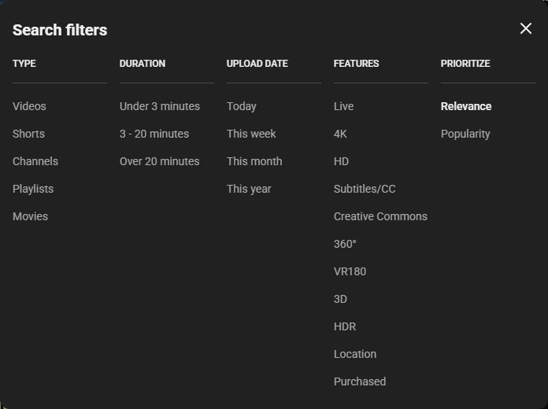
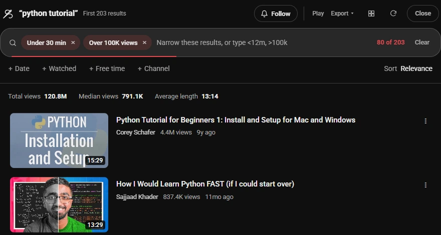

Guide 18·Search filters
How to filter YouTube search by views and exact length.
Updated 17 November 2026
Short answer
YouTube's search has no view count filter and no exact length. Since January 2026 there isn't even a view count sort: Prioritize: Popularity is the closest, and it puts results mostly, not strictly, in order of views. Length comes in three buckets: under 3 minutes, 3 to 20, over 20. Needle, a free Chrome extension, lets you type both into the search bar instead: python tutorial <30m >100k.
01·On YouTube
What YouTube's Filters menu has now
Search for something, then click Filters at the top right of the results. This is the whole menu, as it was on 17 November 2026:

- Type: videos, Shorts, channels, playlists, movies. Videos leaves Shorts out.
- Duration: under 3 minutes, 3 to 20 minutes, over 20 minutes.
- Upload date: today, this week, this month, this year.
- Features: live, 4K, HD, subtitles, Creative Commons, 360°, VR180, 3D, HDR, location, purchased.
- Prioritize: relevance or popularity.
There's also a row of chips above the results, like Unwatched and Recently uploaded.
It used to have more. In January 2026 YouTube renamed Sort by to Prioritize, turned View count into Popularity, and dropped Upload date and Rating as sorts, along with the Last hour filter, saying they weren't working as expected. How to sort by upload date again.
02·The gap
What it can't do
- A view count limit. Nothing hides videos under 10,000 views, or over a million.
- A strict view count sort. Popularity comes close, and close is all it promises.
- Exact lengths. Three buckets. Under 10 minutes, or between 20 and 40, isn't possible.
- Leaving a channel out. If one creator fills every search, there's no way to mute them there. YouTube's minus sign does the opposite for a channel.
03·Popularity
The closest without an extension: Popularity
- Search as usual.
- Click Filters, then Popularity under Prioritize.
- For length, open Filters again and add the Duration that's nearest to what you want.
Popularity sends YouTube the same setting the old View count sort did, and the order comes out close to most viewed first. Close is the word. Three searches on 17 November 2026:
- sourdough bread: 16.4M, 9.2M, 4.2M, 3.5M, then 10.6M views. The fifth video had more than the two above it.
- iphone 17 review: the most viewed video, at 16.9M, came fourth.
- python tutorial: eleventh was a 39M-view video about an egg inside a snake. Views count for so much that big videos sharing one word get in.
It also only sorts. There's no "over 100K views", so the small videos are still there further down, and the next search starts without it, so you pick it again every time.
04·With Needle
Type your filters with Needle
- Type your search into YouTube's own search bar with the filters after it, like
python tutorial <30m >100k. - Press Enter.
- Needle reads the first 200 or so results and opens its panel on them, your filters shown as chips you can take off one at a time.
- When a strict filter leaves too few, Load more at the bottom reads further down YouTube's results.

Whatever YouTube can do itself is sent to YouTube as its own filter, so its whole catalogue is narrowed before Needle sees a thing: date:week, is:4k, sort:views as Popularity, and a length that fits inside one of its buckets (>25m goes as Over 20 minutes). Needle then applies the exact numbers and, for sort:views, puts what's left in true view count order.
Every filter
<20m | Shorter than 20 minutes (also >45m, <1.5h, >90s; a number on its own is minutes) |
>100k | More than 100K views (also <5k, and >1m views for a million) |
unwatched | Never started (is:started for half watched, is:watched for done) |
is:fresh | Nothing you were shown in an earlier search |
date:week | Uploaded this week (also today, month, year) |
after:2023 | Uploaded after 2023 (before: works too, with a year, month or day) |
@name | Only from that channel |
-@name | Never from that channel |
-word | Leave out anything mentioning it |
sort:views | Most viewed first, by the real count (also newest, oldest, longest, shortest) |
lang:en | Titles in English |
is:4k | YouTube's own feature filters: also is:live, is:hd, has:subtitles, is:creative-commons |
is:short | Shorts only (is:movie for movies) |
Try these
python tutorial <30m >100kproper tutorials that aren't three hours long.documentary >45m >1m views sort:viewsfeature-length documentaries over a million views, the biggest first.lofi is:freshonly results you haven't already scrolled past.phone review -@mkbhdfor when one channel fills the whole page.recipe date:month unwatchednew this month, and not something you've seen.
Shorts in the way? Type: Videos keeps them out of one search, and Needle's Hide Shorts keeps them out of all of them. The same filters also search the lists YouTube keeps for you: start with in:history, in:wl or in:liked, and searching your watch history shows how.
05·Questions
Questions?
Did YouTube remove sort by view count?
Yes, in January 2026. The Sort by menu became Prioritize, and View count became Popularity, which YouTube says weighs view count along with signals like watch time. Upload date and Rating went as sorts altogether. In Needle, sort:views orders results by the real view count.
Is Popularity the same as sorting by views?
Close, not the same. It sends YouTube the same setting the old View count sort did, and results come out mostly most-viewed first, with some out of place. Checked on 17 November 2026: on iphone 17 review, the most viewed video came fourth.
Can YouTube hide videos under a certain number of views?
No. Neither the Filters menu nor the search bar has a minimum or maximum view count. In Needle, >100k shows only videos over 100,000 views, and <5k only small ones.
How do I filter YouTube videos by exact length?
YouTube's Duration filter has three settings: under 3 minutes, 3 to 20 minutes and over 20 minutes. Nothing finer. In Needle you type the length you want: <12m, >45m, <1.5h or >90s. A number on its own is minutes.
Does >1m mean a minute or a million views?
A minute. Length is what people filter on most, so m on its own is minutes. Add the word views for millions: >1m views. A number ending in k or b always means views.
Why are YouTube's search filters not working?
Usually because they changed, not because they broke. Since January 2026, Upload date only narrows results to a period and leaves them in YouTube's order, so a week-old video can sit above one from today. Popularity isn't strictly by views. And the address trick for newest first, adding &sp=CAI%253D, no longer does anything: checked on 17 November 2026, the results come back in the usual order.
Do the filters stay on for my next search?
YouTube's don't. A new search from the search bar starts without them, so Popularity or a Duration has to be picked again each time. Filters typed with Needle are part of the search itself, so there's nothing to set again: they go wherever the words go.
Can I leave Shorts out of search?
Yes. Since January 2026, Filters then Type: Videos leaves Shorts out. Needle's Hide Shorts button keeps them out of search, Home and Subscriptions until you turn it off.
Does YouTube see my filters?
Only the ones it has itself, like date:week or is:4k, which go to YouTube as its own filters. Needle takes the rest out before the search is sent, so <12m never turns into a search for “<12m”.
Does it work on my phone?
No. Needle is for YouTube in a desktop browser: Chrome, or another browser that installs extensions from the Chrome Web Store.
Is it free?
Yes. No account, no trial, no paid tier.